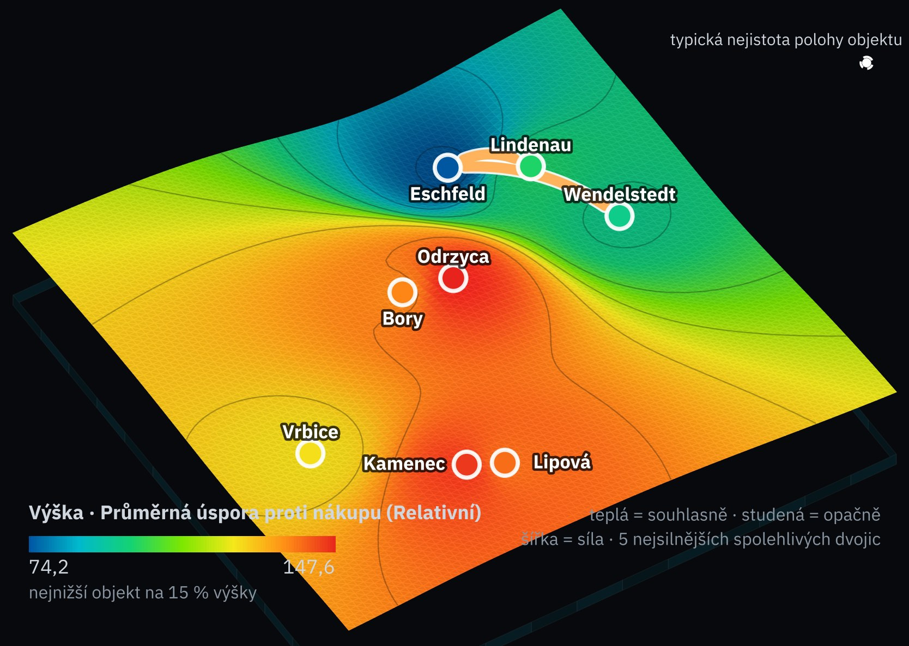
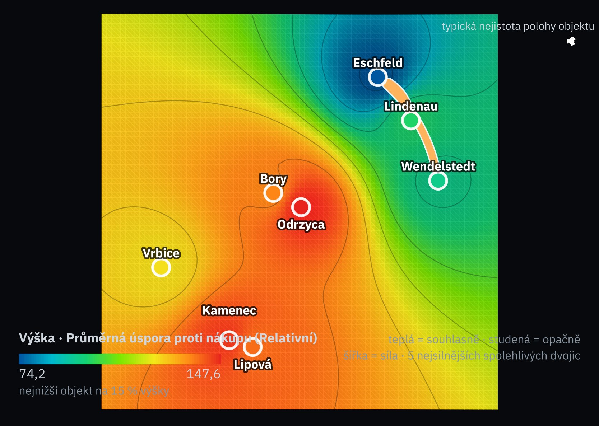
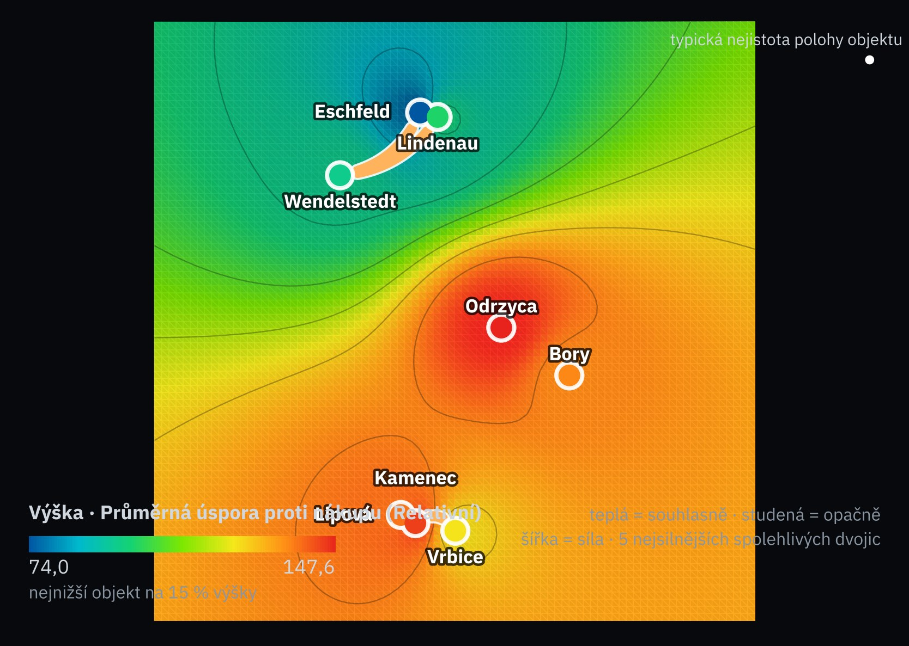
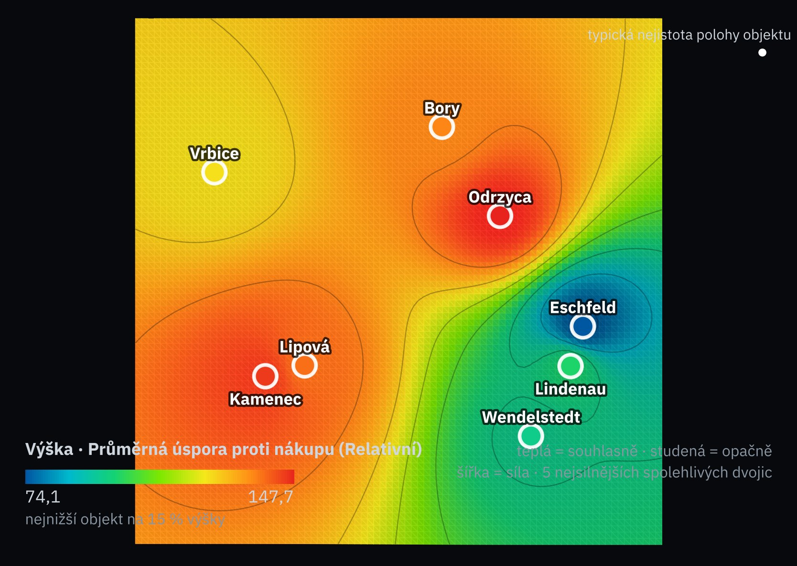
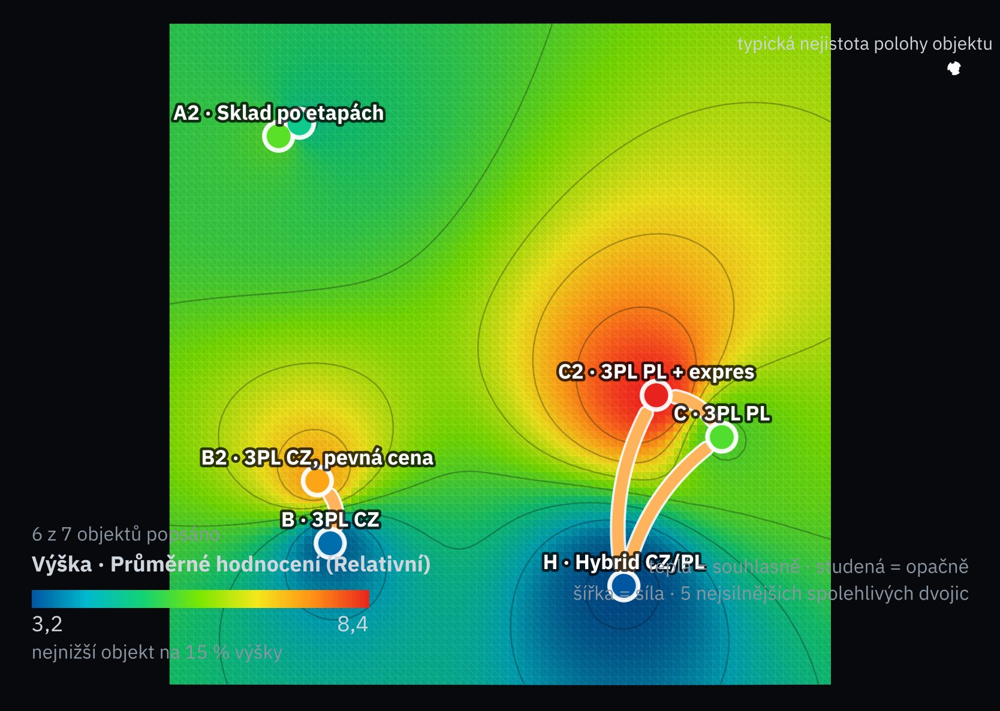

Režim mapy
čtyři režimy, čtyři různá tvrzeníBudoucnosti
řádky: budoucnosti modelu Monte Carlo, každá vycentrovaná na průměr objektů„V tomto modelu se A a B daří relativně lépe v týchž budoucnostech.“modelováno vybránoExpertní mapa
řádky: varianty hodnocené lidmi podle kritérií„Tak to vidí jmenovaní hodnotitelé.“modelováno vstupy zadali lidéJednotky
řádky: pobočky, zboží, zákaznícisouvislost napříč jednotkami s intervalemodhad čeká na validační saduObdobí
řádky: 24–36 měsícůslabá souvislost v daném časovém měřítkuodhad čeká na validační saduMapa scénářů vah (MV9) je pátý způsob čtení téhož enginu: řádky jsou testované váhy, ne budoucnosti. Stojí vedle této mapy, nikdy se s ní neslučuje. Jednotky a období se odemknou, až validační sada projde na prazích metodika.
Statistická smlouva režimu
každý režim tvrdí něco jiného, a proto se jinak ověřuje| Budoucnosti | Expertní mapa | Jednotky | Období | |
|---|---|---|---|---|
| Co je řádek | jedna budoucnost modelu (los), vycentrovaná na průměr objektů; losy jsou nezávislé | hodnocení jednoho hodnotitele podle jednoho kritéria; blok = hodnotitel | jedna jednotka klienta (pobočka, zboží, zákazník) | jedno období (měsíc) téže firmy |
| O čem je tvrzení | o modelu a jeho předpokladech, ne o trhu ani o příčinách | o jmenovaných hodnotitelích, ne o všech manažerech | o jednotkách klienta v daném roce | o této firmě v tomto období |
| Co se měří | souběh relativního výsledku objektů mezi budoucnostmi; společná absolutní ztráta zvlášť, z nevycentrovaných hodnot (06) | shoda profilů variant napříč kritérii | souvislost ukazatelů napříč jednotkami | souběh ukazatelů v čase po odstranění trendu a sezónnosti |
| Co znamená nula | nemá smysl: vazby vytváří model; žádná p-hodnota | hodnotitelé nesdílejí žádný vzor | žádná souvislost napříč jednotkami | žádný souběh nad trend a sezónnost; fázově náhodné surogáty |
| Převzorkování | žádný bootstrap; určenost: mapy ze dvou polovin budoucností (práh 0,59) | po hodnotitelích (celé bloky); efektivní n = počet hodnotitelů | shlukový bootstrap po regionech; nezávislost jednotek uvedena | blokový bootstrap sousedních období; test strukturního zlomu |
| Co měří zobrazená stabilita | citlivost tvaru na předpoklady, stanovené před výpočtem (07); víc budoucností snižuje jen numerický šum, ne chybu předpokladů | závislost na hodnotitelích a na způsobu spojení (průměr, směs, jeden vynechán) | nejistotu výběru jednotek | nejistotu z časové závislosti |
Mapa budoucností ChemVitro · vzor ze zprávy 2
8 lokalit · 20 000 budoucností jako pozorovatelé

Jak mapu číst
Co z ní jde přečíst
Výšky a rozdělení na německou skupinu v údolí a česko-polskou stranu na hřebeni: to se objevuje ve všech třech verzích.
Ne přesné vzdálenosti ani jemné polohy uvnitř česko-polské strany (zda má Vrbice blíž ke Kamenci, nebo k Borům), ne příčiny, ne pravděpodobnosti.
Program AIA, metodika aia-sociomap-5; zpráva 2, oddíl 11.2. Pohled shora nezkresluje vzdálenosti perspektivou.
Matice vztahů T7 ChemVitro · vzor ze zprávy 2
z této matice se mapa kreslí| Vrbice | Lipová | Kamenec | Wendelstedt | Lindenau | Eschfeld | Odrzyca | Bory | |
|---|---|---|---|---|---|---|---|---|
| Vrbice | – | 0,50 | 0,52 | −0,27 | −0,27 | −0,26 | −0,15 | −0,07 |
| Lipová | 0,50 | – | 0,55 | −0,22 | −0,23 | −0,27 | −0,14 | −0,15 |
| Kamenec | 0,52 | 0,55 | – | −0,23 | −0,23 | −0,26 | −0,14 | −0,15 |
| Wendelstedt | −0,27 | −0,22 | −0,23 | – | 0,56 | 0,70 | −0,12 | −0,17 |
| Lindenau | −0,27 | −0,23 | −0,23 | 0,56 | – | 0,71 | −0,12 | −0,15 |
| Eschfeld | −0,26 | −0,27 | −0,26 | 0,70 | 0,71 | – | −0,15 | −0,15 |
| Odrzyca | −0,15 | −0,14 | −0,14 | −0,12 | −0,12 | −0,15 | – | 0,48 |
| Bory | −0,07 | −0,15 | −0,15 | −0,17 | −0,15 | −0,15 | 0,48 | – |
Vztahy uvnitř zemí jsou kladné: německé 0,56–0,71, české 0,50–0,55, polské 0,48. Všechny vztahy mezi zeměmi jsou slabé a záporné, −0,07 až −0,27: zčásti kvůli centrování, které z každé budoucnosti odečte průměr; když se jedné skupině daří relativně lépe, ostatním se musí dařit hůř. Zvýrazněny jsou dvě dvojice označené za spolehlivé. Lokality jedné země sdílejí mzdy, ceny energie, kurz a povolovací režim, takže je stejné budoucnosti posouvají stejným směrem (úsudek).
Společná selhání T8 ChemVitro · vzor ze zprávy 2
když je lokalita horší než nákup, jak často je horší i jiná| Když je horší než nákup … | Vrbice | Lipová | Kamenec | Wendelstedt | Lindenau | Eschfeld | Odrzyca | Bory |
|---|---|---|---|---|---|---|---|---|
| Odrzyca | 90 % | 84 % | 79 % | 98 % | 97 % | 99 % | – | 91 % |
| Kamenec | 99 % | 93 % | – | 98 % | 98 % | 100 % | 75 % | 83 % |
Zvýrazněna je jediná dvojice pod 80 %. Pokud by klient chtěl mít náhradní lokalitu pro případ, že úřad na první uloží kompenzační opatření, je jí pro Odrzycu Kamenec a naopak; před levným nákupem neochrání ani tato dvojice.
Relativní výkon, nebo společná ztráta
dvě čtení týchž budoucností| Dvojice | Na mapě (po centrování) | V tabulce T8 | Co to znamená |
|---|---|---|---|
| Odrzyca · Kamenec | −0,14 | 75–79 % společných selhání | na mapě vypadají jako lokality s nezávislými osudy; sdílejí jen riziko levného nákupu, ne národní rizika |
| Odrzyca · Eschfeld | −0,15 | 99 % | relativně opačné, absolutně prodělají skoro vždy spolu |
Centrování odstraní společnou úroveň všech lokalit, tedy právě vliv levného nákupu, hlavní příčiny společných selhání. Tabulka na korelace cen energie tolik citlivá není.
| Dvojice | Po odečtení průměru losu | Bez odečtení | Co to znamená |
|---|---|---|---|
| C2 · B2 | +0,41 | +0,78 | relativně podobné jen trochu; absolutně ztrácejí spolu, když klesnou objednávky; B2 proti tomu C2 nechrání |
| A · C2 | −0,52 | +0,12 | relativně opačné losy; společnou ztrátu téměř nesdílejí |
| A · A2 | +0,88 | +0,95 | v obou čteních skoro jedna varianta |
| H · B2 | −0,20 | +0,61 | relativně opačné, absolutně ztrácejí spolu |
Mapa (08) je relativní; tabulka patří k ní.
Zkouška stability ChemVitro · vzor ze zprávy 2
tři nastavení korelací, stanovená před výpočtemCo bylo stanoveno předem
Mapa se spočítá ve třech verzích: s korelacemi podle úsudku (elektřina mezi zeměmi 0,8, elektřina a plyn 0,6, plyn a povolenka 0,4), bez korelací (nulové korelace cen energie; překročení rozpočtu a zpoždění losována nezávisle) a se silnými korelacemi (0,95 · 0,85 · 0,4).
Práh: mapa je stabilní, jen pokud se každé dvě verze shodnou v pořadí 28 vzdáleností mezi lokalitami alespoň na úrovni 0,8.
Co vyšlo
Vztahy v matici jsou stálejší než nakreslené polohy: shoda 0,966 · 0,899 · 0,826. Určenost: mapy z obou polovin budoucností se shodují na 0,91 proti prahu 0,59.


Výška a barva jsou ve všech třech verzích prakticky stejné (74,0–74,2 až 147,6–147,7 mil. EUR), protože průměrná úspora na korelaci téměř nezávisí. Náhodnost losování není podstatnou nejistotou: budoucnosti jsou losy modelu, ne vzorek pozorovatelů; proto zkouška určenosti a zkouška stability vůči předpokladům, obě stanovené předem.
Sedm variant v 800 scénářích Velis · pracovní případ, smyšlené hodnoty
rozložení a terén enginu; stabilita podle smlouvy režimu
| Test | Výsledek | Práh | Stav |
|---|---|---|---|
| Chyba Monte Carlo: 10 opakování s jinými seedy, 800 losů v každém | největší odchylka r 0,02 · 11 vazeb s |r| ≥ 0,30 ve všech 10 | ≤ 0,03 | kreslí se jen těch 11 |
| Citlivost na předpoklady: korelace vstupů vypnuté · rozsah poplatku 3PL PL o polovinu širší · růst objednávek 0–14 % | posun po Procrustově zarovnání: C2 0,04 · B2 0,06 · A 0,05 · H 0,19 | ≤ 0,10 | H citlivý, označeno |
| Kvalita rozložení: stres-1 proti zamíchaným datům | 0,08 proti 0,31 | lepší | splněno |
| Opakovaný výpočet se stejným seedem (PCG64, 20261030): ověřuje implementaci, ne vhodnost modelu (MV8) | shodný bajt po bajtu | shoda | splněno |
Stejný engine, 800 losů Modelu Velis. Zkouška stability se třemi nastaveními korelací, jak ji stanovil vzor, tu ještě není: Předpoklady Velis korelace deklarují (M2), zkoušku je třeba zapsat před dalším výpočtem.
Co mapa smí tvrdit
na obrazovce i ve zprávěV tomto modelu se německým lokalitám daří relativně lépe v týchž budoucnostech a leží v údolí nižších úspor; české a polské leží na hřebeni. Záloha mezi lokalitami neexistuje, to říká tabulka T8: Odrzyca a Kamenec selžou spolu v 75–79 % špatných budoucností.
V tomto modelu se C2 a B2 daří ve stejných scénářích a obě drží slib doručení; když klesnou objednávky, ztrácejí spolu. Hala (A, A2) se relativně vyplácí v opačných scénářích než C2.
Nikdy netvrdí:
Expertní mapa: varianty × kritéria Velis · pracovní případ, smyšlené hodnoty
druhý režim v MVP| Varianta | Riziko provedení | Závislost na dodavateli | Slib doručení | Pružnost kapacity | Kapitálová náročnost |
|---|---|---|---|---|---|
| A · Vlastní sklad | 4 | 9 | 8 | 5 · rozptyl 2,9 | 2 |
| A2 · Sklad po etapách | 6 | 9 | 8 | 7 | 4 |
| B2 · 3PL CZ, pevná cena | 9 | 4 | 8 | 6 | 10 |
| C2 · 3PL PL + expres | 6 | 5 | 8 | 6 · rozptyl 3,1 | 9 |
| H · Hybrid | 4 | 6 | 8 | 7 | 8 |
Známky 1–10 (10 = nejlepší), průměr tří hodnotitelů: výzkumník AIA, provozní ředitel klienta, finanční ředitel klienta. Kde se hodnotitelé rozcházejí (rozptyl nad 2,5), mapa nepoužije průměr, ale vzorkuje směs jejich hodnocení se stejnou vahou; mapa se ukáže i s každým hodnotitelem vynechaným. Efektivní n jsou 3 hodnotitelé, ne 15 známek.